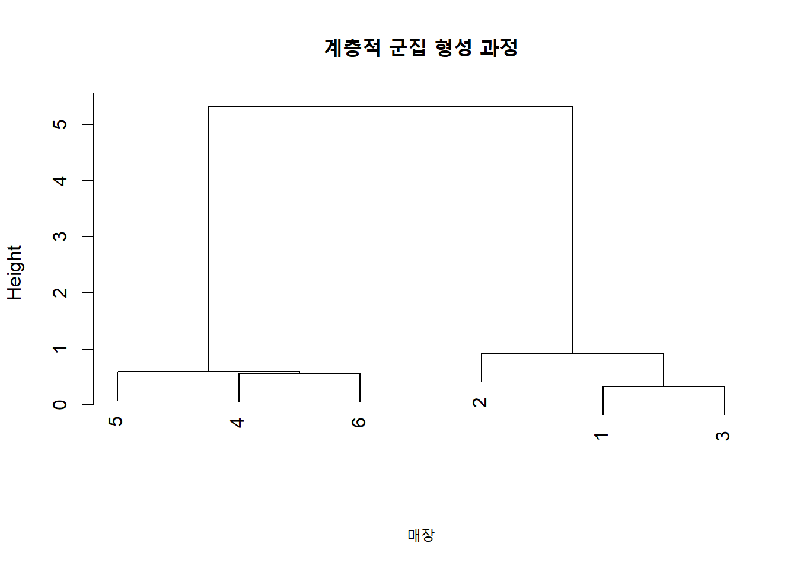
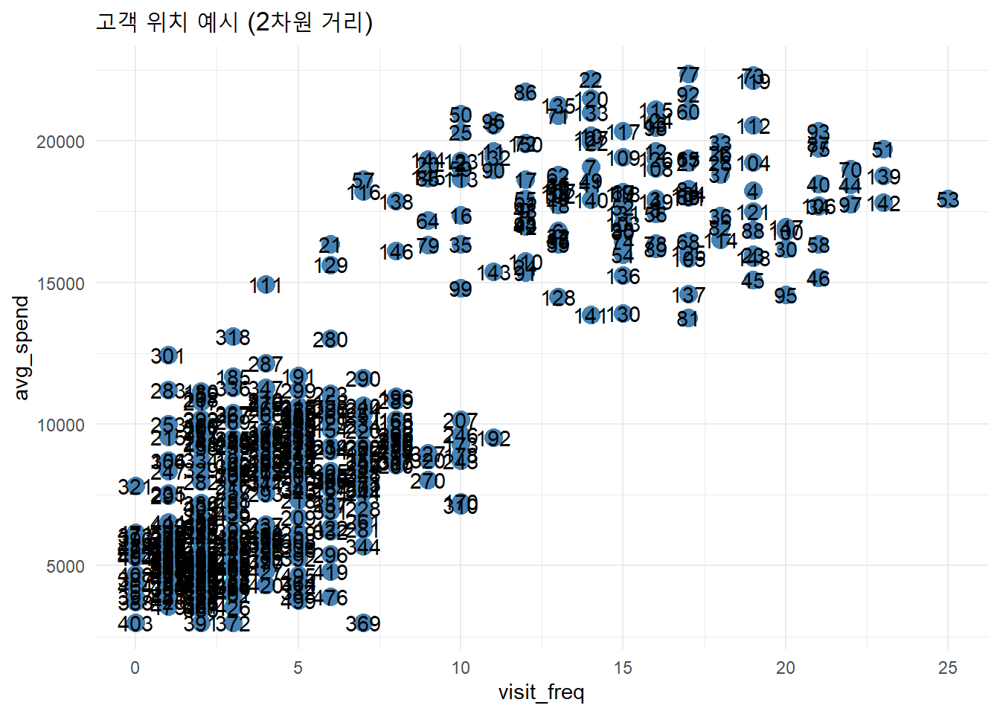
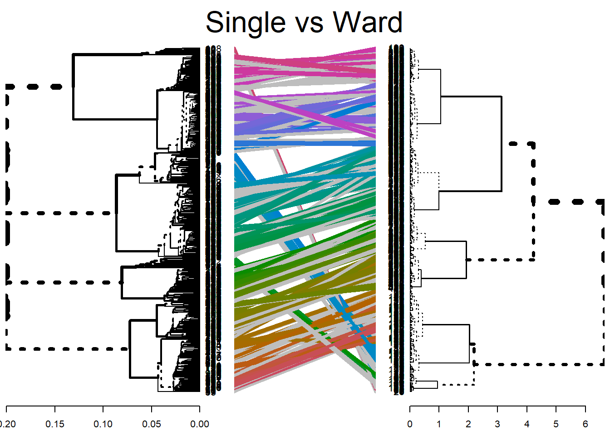
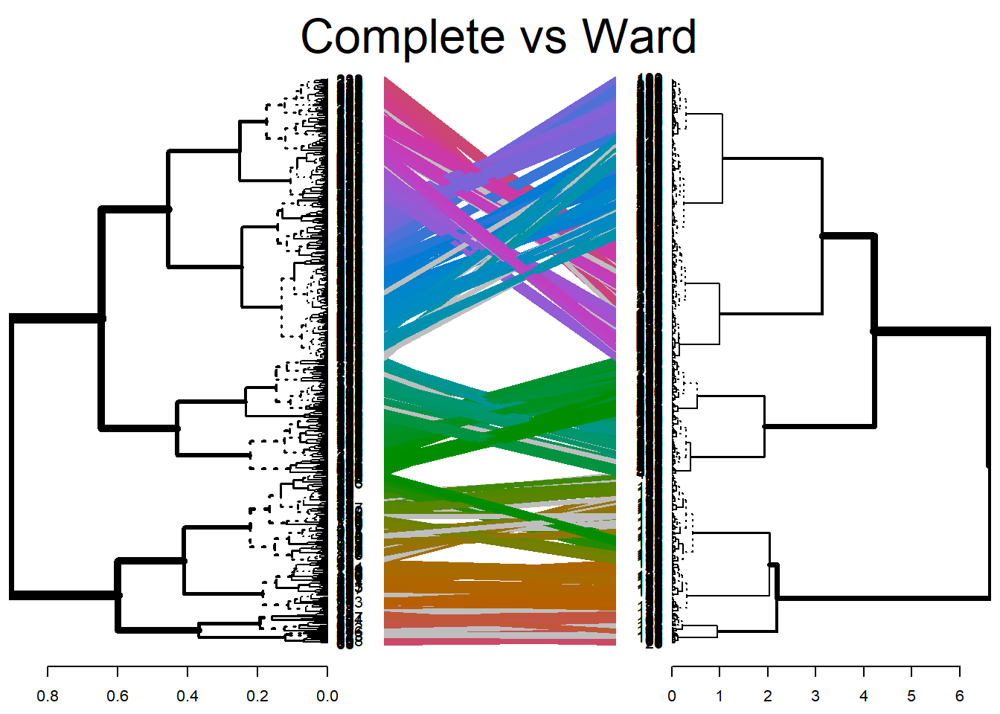
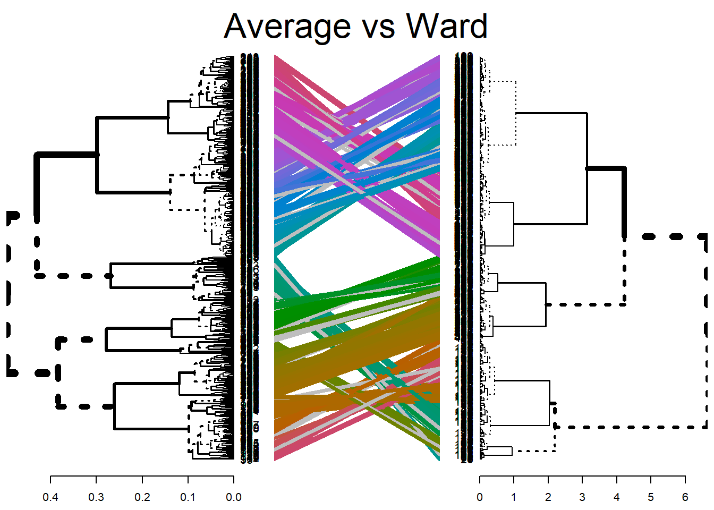

일반적으로 인간은 그룹을 나누길 좋아한다. 좀 더 명확하게 표현하자면, 현상에서 보이는 내용을 유사한 그룹끼리 묶어서 이해하는 것을 보다 선호한다. 이는 한편으로는 사회적 진화와 생존의 과정에서 나타나는 자연스러운 현상일 수 있다. 예를 들어, 수렵과 채집을 하던 시기에, 인간에게 가장 중요한 능력중의 하나는 인간 이외의 짐승들에 대해서 인간에게 위협적인 짐승과 인간에게 도움이 되는 짐승을 구분하는 것이었을 것이다. 또한, 인간이 먹을 수 있는 과일이나 곡물과 먹으면 안되는 것을 구분하는 것이 매우 중요한 능력이었을 것이다. 이와 같이, 데이터 속에 숨어 있는 자연스러운 그러나 매우 중요한 유사점과 차이점을 가진 그룹을 구분하는 것을 군집분석이라고 한다.
외식 프랜차이즈 본사에서 전국의 가맹점을 분석할 때, 모든 매장이 동일하게 운영된다고 가정하는 것은 현실과 다르다. 어떤 매장은 점심시간에 몰리는 직장인을 중심으로 운영되고, 또 어떤 매장은 저녁 시간대 가족 단위 고객이 주를 이룬다. 이러한 서로 다른 특성을 반영하지 않고 전국 매장을 동일한 전략으로 관리한다면, 성과는 저조할 수밖에 없다. 이처럼 속성이 유사한 집단을 자연스럽게 구분하려는 것이 바로 군집분석(clustering)의 핵심 목적이다.
10.1.2 지도학습이 아닌, 정답 없는 데이터로부터 시작하는 분석
군집분석은 비지도학습(Unsupervised Learning)에 해당한다. 이는 정답(라벨)이 주어지지 않은 데이터를 분석하는 방식이다. 예를 들어 고객 데이터에 ‘충성고객’ 또는 ’이탈예정 고객’이라는 라벨이 없다면, 분류분석을 수행할 수 없다. 이럴 때, 고객들의 행동 패턴을 기준으로 비슷한 성향의 고객을 그룹화하는 것이 군집분석이다. 관측값들 사이의 유사성(similarity) 또는 거리(distance) 를 기준으로 한다.
10.1.3 군집분석의 핵심 원리: 동질성과 이질성
군집분석에서 가장 중요한 원리는 군집 내 동질성(homogeneity)과 군집 간 이질성(heterogeneity)이다. 같은 군집에 속한 관측값들은 서로 유사해야 하며, 다른 군집에 속한 값들과는 뚜렷하게 달라야 한다. 예를 들어, 한 프랜차이즈 본사의 고객 데이터에서 ‘직장인 점심 고객’, ‘주말 가족 단위 고객’, ’배달 전문 고객’이 뚜렷이 나뉜다면, 그 세 그룹은 서로 이질적인 특성을 보이지만, 각 군집 내에서는 매우 유사한 소비 패턴을 갖는다는 의미이다.
10.1.4 계층적 군집분석의 정의와 핵심 개념
계층적 군집분석(Hierarchical Clustering)은 이름 그대로 데이터를 트리(tree) 구조로 연결하여 점차적으로 군집을 형성해가는 방식이다. 사전에 군집의 개수를 정할 필요 없이, 모든 관측값을 하나의 군집이 될 때까지(또는 하나의 군집이 남을 때까지) 군집을 통합하거나 분할하면서 분석이 진행된다.
이 방식은 특히 고객 세분화(Segmentation), 지점 분류(Franchise Classification), 신제품 타겟 분석 등 외식산업에서 자주 활용된다. 분석 결과는 트리 형태로 표현되며, 이를 덴드로그램(Dendrogram)이라고 부른다. 덴드로그램을 통해 어느 시점에서 군집을 자르는 것이 가장 합리적인지 시각적으로 판단할 수 있다.
10.1.5 외식산업 사례: 전국 프랜차이즈 매장의 자연스러운 군집
한 외식 브랜드 본사에서는 다음과 같은 세 가지 변수로 전국 150개 매장을 분석하고자 한다:
- 하루 평균 객단가(원) - 하루 평균 방문 고객 수 - 주말 고객 비율(%)
이 데이터를 계층적 군집분석으로 분석하면 다음과 같이 자연스러운 그룹이 나타날 수 있다:
- Group A: 고객 수는 적지만, 객단가가 매우 높은 고급 상권 매장 - Group B: 고객 수가 많고, 객단가도 중간 이상인 대학가 중심 매장 - Group C: 배달 비중이 높고 주말 매출이 높은 주택가 기반 매장
이러한 분석 결과를 기반으로, Group A는 고급 디저트 메뉴 강화, Group B는 회전율 관리, Group C는 배달 할인 정책 적용 등 차별화된 전략 수립이 가능하다.
10.1.6 덴드로그램으로 시각화된 의사결정
계층적 군집분석은 분석 결과가 덴드로그램 형태로 시각화된다는 장점이 있다. 예를 들어, 위의 전국 매장 데이터를 분석한 후 덴드로그램을 그리면, 어느 시점에서 군집을 3개로 나누는 것이 가장 자연스러운지 눈으로 확인할 수 있다. 이는 연구자 또는 실무자가 직관적으로 군집을 평가하고 전략을 수립하는 데 큰 도움을 준다.
계층적 군집분석은 사전에 군집 개수를 알 필요가 없고, 분석 흐름을 시각적으로 확인할 수 있으며, 변수 표준화만 잘 이루어지면 해석이 용이하다는 장점이 있다. 그러나 한 번 잘못된 군집으로 묶이면 되돌릴 수 없으며, 거리 정의 방식과 알고리즘 설정에 따라 결과가 매우 달라질 수 있다는 점에서 주의가 필요하다.
계층적 군집분석은 비지도 학습 기반의 분석기법으로, 외식산업 데이터를 고객, 지점, 제품 유형 등으로 분류할 때 유용하다. 덴드로그램을 통해 결과를 시각적으로 표현할 수 있으며, 분석 전 변수 표준화와 거리측정 방식에 대한 이해가 필요하다. 특히 외식 매장의 특성을 반영한 변수 설계와 실무 맥락 해석이 병행될 때 가장 큰 가치를 발휘한다.
10.2 계층적 군집 형성 방법
10.2.1 군집을 어떻게 묶을 것인가?: 두 가지 방식의 출발점
계층적 군집분석은 데이터를 군집으로 나누는 방식에 따라 두 가지 유형으로 나뉜다. 첫 번째 방식은 합병적 방법(Agglomerative Method)이고, 두 번째는 분할적 방법(Divisive Method)이다. 이 둘은 출발점에서 정반대 방향으로 진행된다. 전자는 개별 데이터를 점차 묶어가고, 후자는 전체 데이터를 점차 나눠간다.
합병적 방법은 각 관측값(매장, 고객 등)을 하나의 군집으로 간주하고 시작한다. 이후 가장 유사한 두 군집을 찾아서 병합하고, 병합 후 다시 전체 군집 간 거리 계산을 반복하면서 하나의 군집이 남을 때까지 계속 결합해간다. 반대로 분할적 방법은 전체 데이터를 하나의 군집으로 시작하여, 유사성이 낮은 관측값부터 점차 분리해나간다. 하지만 실제 분석에서는 합병적 방법이 훨씬 더 널리 사용되며, 대부분의 통계 소프트웨어도 이를 기본값으로 제공한다.
10.2.2 외식산업 예제: 전국 매장을 묶는 두 가지 방법의 차이
한 프랜차이즈 본사가 전국의 100개 가맹점을 고객 행동 특성으로 군집화하려 한다고 가정해보자. 사용된 변수는 다음과 같다.
- 주간 평균 객단가 - 주말 고객 비중 - 배달 비율
합병적 방법은 100개 매장을 각각 하나의 군집으로 시작한다. 그리고 유사도가 가장 높은 두 매장을 묶는다. 예를 들어, 강남점과 서초점이 비슷한 매출 패턴을 보인다면 이 둘이 가장 먼저 병합된다. 그 후 이 새로운 군집과 다른 매장 간의 거리를 다시 계산하여 병합을 계속한다. 이 과정을 반복하면, 최종적으로 전체 매장이 하나의 군집으로 병합된다. 분석자는 중간 단계에서 적절한 군집 수를 덴드로그램에서 자르고 판단하게 된다.
분할적 방법은 반대로, 100개 매장을 하나의 큰 군집으로 시작한다. 그 다음 가장 이질적인 매장을 찾아서 두 개의 그룹으로 나누고, 각 그룹 내에서 다시 분할을 반복한다. 이 방법은 이론적으로도 가능하지만 실제 데이터 수가 많을 경우 계산량이 급증하고, 결과가 불안정해지는 경우가 많다. 특히 외식산업처럼 변수 간 상관관계가 복잡하고 외부 요인의 영향(상권, 날씨 등)이 큰 경우에는 합병적 방식이 훨씬 안정적이고 직관적이다.
10.2.3 시각적으로 이해해보기: 군집이 형성되는 흐름
계층적 군집 형성은 시각화가 핵심이다. 덴드로그램을 활용하면 군집 형성과정을 트리 구조로 볼 수 있다. 아래 R 코드는 합병적 방법을 활용하여 6개 매장을 기준으로 군집을 형성하는 흐름을 보여준다.
이 결과는 분석자가 덴드로그램을 직접 해석하면서 적절한 군집 수를 결정할 수 있게 한다. 실제 분석에서는 고객 특성, 상권 환경, 경쟁 매장 수 등 외부 요인을 고려하여 군집의 수를 정한다.
10.2.4 분석 방법의 선택: 현실과 실용성의 균형
계층적 군집 형성 방식은 이론적으로는 다양하지만, 실제 데이터 분석 현장에서는 합병적 방법이 사실상 표준으로 자리 잡고 있다. 그 이유는 다음과 같다. 첫째, 대부분의 통계 프로그램(SPSS, R, Python 등)은 합병적 방법을 기본으로 제공한다. 둘째, 초기 군집 수를 정할 필요가 없으며, 덴드로그램을 통해 시각적으로 설명하기 쉽다. 셋째, 외식 산업처럼 군집 간 경계가 모호하고 이질성이 중첩되는 경우에 더 유연하게 대응할 수 있다.
분할적 방법은 고도로 이론적인 상황에서는 의미가 있지만, 외식 데이터를 다룰 때는 실제 구현이 까다롭고 계산량이 많다는 한계가 있다. 예를 들어 서울 전체 가맹점 300개를 하나의 군집으로 시작해 하나씩 쪼개나가는 구조는, 중간 분할이 잘못되면 전체 결과가 왜곡될 수 있다.
계층적 군집 형성 방법은 데이터를 병합해가며 군집을 형성하는 방식과, 분할해가며 군집을 구성하는 방식 두 가지로 나뉜다. 실제 분석에서는 계산의 효율성과 결과 해석의 용이성 측면에서 합병적 방법이 일반적으로 선호된다. 특히 외식산업처럼 관측값의 수가 많고 특성의 다양성이 큰 분야에서는 덴드로그램 기반의 시각적 해석과 병합 순서의 직관성이 큰 장점으로 작용한다.
10.3 계층적 군집분석 계산 단계
10.3.1 군집은 어떻게 형성되는가?: 계산 단계로 보는 흐름
계층적 군집분석은 데이터 간의 거리 또는 유사성을 기반으로 전체 군집 구조를 단계적으로 만들어 나가는 과정이다. 이때 핵심은 관측값 간 거리 행렬을 바탕으로 가장 가까운 군집을 반복적으로 병합해 가는 것이다. 이 계산 흐름은 단순하지만 반복적이며, 그 과정 전체가 덴드로그램에 담기게 된다. 이 장에서는 군집이 만들어지는 과정을 수치적으로 이해하는 것이 목표다.
10.3.2 Step 1: 거리 행렬 계산
분석의 첫 번째 단계는 각 관측값들 간의 거리를 계산하는 것이다. 외식산업에서는 예를 들어 6개 매장을 객단가, 고객 수, 배달 비율 등의 변수로 표현했을 때, 이들 매장 간의 거리를 계산하여 6x6 거리 행렬(distance matrix)을 생성한다. 거리는 일반적으로 유클리드 거리(Euclidean distance)를 사용하며, 표준화를 선행하는 것이 일반적이다.
# 외식 매장 6곳의 데이터data <-data.frame(price =c(12000, 15000, 13000, 8000, 8500, 7000),customers =c(100, 90, 95, 250, 300, 270),delivery_ratio =c(0.1, 0.15, 0.12, 0.5, 0.55, 0.6))# 변수 표준화 후 거리 계산scaled <-scale(data)print(data)
출력되는 거리 행렬은 각 매장 쌍 간의 거리 값을 나타내며, 이 행렬을 기반으로 다음 단계로 넘어간다.
10.3.3 Step 2: 가장 가까운 군집 병합
거리 행렬을 통해 현재 군집들(처음에는 각각의 관측값이 하나의 군집임) 중 가장 거리가 가까운 두 개의 군집을 병합한다. 예를 들어 위의 매장 데이터에서 매장4와 매장5가 서로 가장 유사한 소비 패턴을 가지고 있다면 이 둘이 먼저 병합된다.
군집의 수는 처음에는 n개(n = 관측값 수)에서 시작해서, 병합할 때마다 하나씩 줄어든다. 따라서 n-1번의 병합을 거치면 하나의 군집이 남는다.
10.3.4 Step 3: 거리 행렬 업데이트
새롭게 병합된 군집은 또 하나의 군집으로 간주된다. 이때 기존의 거리 행렬을 새롭게 갱신해야 한다. 어떤 방법으로 업데이트할지는 선택한 연결법(linkage method)에 따라 달라진다. 이 교재에서는 대표적으로 Complete Linkage, Average Linkage, Ward’s Method 등을 후속장에서 설명한다.
# 병합 및 덴드로그램 생성 (Ward 방법 사용)hc <-hclust(dist_matrix, method ="ward.D2")plot(hc, main ="계층적 군집 형성 과정", xlab ="매장", sub ="")

10.3.5 Step 4: 반복 수행
이번에는 데이터를 바탕으로 거리 행렬에서 어떤 순서로 군집이 형성되었는지 확인하고, 그 과정을 정리한다. 먼저 제공된 거리 행렬을 다시 정리하면 다음과 같다.
1
2
3
4
5
6
1
-
0.97
0.33
2.59
2.98
3.14
2
0.97
-
0.64
3.10
3.39
3.63
3
0.33
0.64
-
2.73
3.09
3.28
4
2.59
3.10
2.73
-
0.57
0.56
5
2.98
3.39
3.09
0.57
-
0.60
6
3.14
3.63
3.28
0.56
0.60
-
1단계 병합: 가장 가까운 두 매장을 먼저 병합
거리 행렬에서 가장 작은 값은 거리 = 0.3276, 이는 매장 1과 매장 3 사이이다.
\(\rightarrow\) 첫 번째 병합: (1, 3)
2단계 병합: 다음으로 가까운 두 매장 병합
다음으로 작은 거리는 거리 = 0.5634, 이는 매장 4와 매장 6 사이이다.
\(\rightarrow\) 두 번째 병합: (4, 6)
3단계 병합: 다음으로 가까운 조합은?
병합된 (4, 6)과 매장 5 간의 거리가 약 0.5693로, 이는 다음으로 작은 거리이다.
\(\rightarrow\) 세 번째 병합: ((4, 6), 5) → 이로써 (4, 5, 6) 이 하나의 군집으로 병합됨
4단계 병합: (1, 3)과 매장 2 병합
(1, 3)과 매장 2 간의 거리는 각각 다음과 같다:
- 1-2: 0.9663 - 3-2: 0.6397
평균 거리 기준으로 계산하면 약 0.8 수준이지만, 가장 가까운 값으로 판단하면 이쯤에서 (1, 3)과 2가 병합된다.
\(\rightarrow\) 네 번째 병합: ((1, 3), 2) → (1, 2, 3) 이 하나의 군집으로 병합됨
5단계 병합: 최종 두 군집 병합
현재 남은 군집은 두 개다:
- 군집 A: (1, 2, 3) - 군집 B: (4, 5, 6)
이 둘의 병합 거리는 가장 높은 지점에서 일어난다. 덴드로그램 상에서는 Height ≈ 5 지점에서 이뤄지는 것으로 보이며, 이는 두 군집 간 유사성이 낮다는 것을 의미한다.
\(\rightarrow\) 다섯 번째 병합: 전체 군집 병합
10.3.6 실제 군집 병합 순서 정리
단계
병합 군집
병합 거리 (대략)
1
(1, 3)
0.33
2
(4, 6)
0.56
3
((4, 6), 5)
0.57
4
((1, 3), 2)
0.64–0.96
5
(1, 2, 3) + (4, 5, 6)
약 5.0
10.3.7 시각적 해석: 덴드로그램에서 군집 수 결정
아래 그림은 전체 군집 병합 과정을 시각화한 덴드로그램이다.
- 군집2(왼쪽 그룹): 4, 5, 6 → 고객 수 많고 배달 비율 높은 매장 - 군집1(오른쪽 그룹): 1, 2, 3 → 고객 수 적고 배달 비율 낮은 매장 \(\rightarrow\) 이는 실제 외식산업에서 흔히 볼 수 있는 상권 기반 군집 구조이다
덴드로그램에서 높이(Height)가 급격히 증가하는 지점(≈ 5)을 기준으로 자르면 2개의 뚜렷한 군집으로 나눌 수 있다. 이처럼 군집 수는 덴드로그램 구조에서 시각적으로 “뛰는 지점”을 기준으로 결정하는 것이 타당하다.
# 병합 및 덴드로그램 생성 (Ward 방법 사용)hc <-hclust(dist_matrix, method ="ward.D2")plot(hc, main ="계층적 군집 형성 과정", xlab ="매장", sub ="")
# 군집 수 설정: k = 2clusters <-cutree(hc, k =2)# 군집번호를 원 데이터에 추가data$cluster <-as.factor(clusters)# 군집별 평균값 계산aggregate(data[, 1:3], by =list(Cluster = data$cluster), FUN = mean)
# 군집 수 설정: k = 3clusters2 <-cutree(hc, k =3)# 군집번호를 원 데이터에 추가data$cluster2 <-as.factor(clusters2)# 군집별 평균값 계산aggregate(data[, 1:3], by =list(Cluster = data$cluster2), FUN = mean)
거리를 확인해 보면, (1, 3)과 2의 거리가 (4, 6)과 5 사이의 거리보다 크기 때문에 2가 다른 그룹으로 묶였으나, 사실 위의 기술통계 값을 보면 그리 달라보이지 않는다. 이는 군집의 개수가 그만큼 중요하다는 의미이다. 군집의 개수를 잘 못 설정하면 설명하기 어려운 결과를 가지고 억지로 무언가를 해야하는 상황이 벌어지게 된다.
10.3.8 분석 요약
실제 계산 결과를 보면 다음과 같은 흐름을 따라 군집이 형성되었다.
-초기 거리 행렬을 기반으로 가장 가까운 두 관측값부터 병합 - 병합이 이루어질 때마다 거리 행렬을 갱신 - 이 과정을 반복하면서 덴드로그램에 병합 구조가 저장됨 - 최종적으로 덴드로그램을 해석하여 군집 수 결정
이러한 과정은 외식산업 실무에서도 매우 유용하다. 예를 들어, 매장 유형을 사전 정의하지 않고 자연스럽게 데이터에서 유사 그룹을 추출할 수 있으며, 이를 통해 지역 마케팅 전략, 메뉴 구성 전략, 서비스 유형 차별화 등에 바로 적용할 수 있다.
10.4 거리 측정 방법의 선택
10.4.1 왜 ’거리’가 분석 결과를 바꾸는가
계층적 군집분석의 핵심은 관측값 간의 거리(distance)를 기반으로 한다는 점이다. 그런데 이 거리의 계산 방식이 달라지면, 결국 군집 형성도 완전히 달라진다. 왜냐하면, 거리는 결국 군집간의 유사성(similarity)을 의미하는 것이기 때문이다. 거리가 멀다면 유사성이 낮은 것이고, 거리가 가깝다면 유사성이 높은 것이다. 유사성이 높은 것들끼리 묶는 것이 군집분석의 핵심인데, 거리를 측정하는 방법이 달라진다는 것은 유사성이 달라진다는 의미이다. 즉, 어떤 거리 측정 방법을 선택하느냐가 군집분석의 결과를 좌우한다는 말이다.
예를 들어 고객 A와 고객 B는 평균 객단가는 비슷하지만, 방문 빈도나 배달 비율이 다를 수 있다. 이럴 때 어느 항목의 차이를 더 중요하게 반영할 것인지에 따라 두 고객 간의 유사성 해석은 달라질 수밖에 없다.
10.4.2 연속형 변수일 때 사용할 수 있는 거리 측정 방법
외식산업 데이터를 분석할 때 가장 흔하게 접하는 데이터는 연속형 변수다. 예를 들어 ‘가격’, ‘방문빈도’, ‘배달 비율’, ‘테이블 회전수’ 등은 연속값으로 측정된다.
이 경우 사용할 수 있는 대표적인 거리 계산 방법은 다음과 같다.
거리 측정법
설명
유클리드 거리
피타고라스의 공식으로 계산된 직선 거리
맨하튼 거리
축을 따라 이동하는 거리, 절대값의 합
마할라노비스 거리
공분산 행렬을 반영하여 변수 간 상관성 고려
표준화 거리
변수 단위가 다른 경우 표준화한 후 유클리드 계산
유클리드 거리는 가장 일반적으로 사용되며, 변수 간 단위가 동일하거나 표준화되어 있다면 효과적이다.
맨하튼 거리는 극단값에 덜 민감하며, 도시 블록처럼 이동하는 경로를 상정한다.
마할라노비스 거리는 변수 간 상관관계를 반영하므로, 공선성이 높은 경우 유용하다.
10.4.3 연속형변수 거리 측정법의 예제
계층적 군집분석의 출발점은 ’두 데이터 간 얼마나 비슷하거나 다른가’를 측정하는 것이고, 이를 위해 거리(distance)라는 수치 개념을 사용한다. 그런데 이 거리를 계산하는 방식은 다양하며, 상황에 따라 적절한 방법을 골라야 한다. 여기서는 네 가지 주요 거리 측정법을 하나의 예시 데이터에 적용하여, 결과가 어떻게 달라지는지 구체적으로 비교해본다.
a <-c(12000, 100, 0.1)b <-c(15000, 90, 0.15)euclidean <-sqrt(sum((a - b)^2))euclidean
[1] 3000.017
문제는 이 경우 단위의 영향을 많이 받는 다는 점이다. 누가 봐도 평균가격의 영향이 가장 크게 나타났다는 것을 알 수 있다. 세 변수에서 차이가 클수록 거리가 커지며, 모든 변수의 단위가 동일하거나 표준화되었을 때 효과적이다.여기서는 가격과 다른 변수의 단위(unit) 차이가 크기 때문에 이 항목이 거리 계산에 큰 영향을 준다.
이런 경우에는 직접적인 거리 계산이 불가능하므로, 유사도 계수(Similarity coefficient)를 활용해야 한다. 대표적인 계수는 다음과 같다.
계수 이름
거리 환산식
특징
Jaccard
거리 = 1 – Jaccard 계수
일치 항목 비중 기준
Dice
거리 = 1 – Dice 계수
민감한 일치 강조
Russel & Rao
거리 = 1 – RR 계수
단순한 매칭 중심
그러나 위의 내용만으로는 이해가 잘 되지 않을 것이다. 다음의 예제들을 보면서 알아보자.
명목형 변수(예: 배달 여부, 브랜드, 결제 방식 등)는 수치형이 아니기 때문에 일반적인 유클리드 거리로는 비교할 수 없다. 대신 유사도 계수(similarity coefficient)를 통해 항목 간의 일치도를 계산하고, 이를 1에서 빼서 거리(distance)로 변환한다.
예를 들어 두 매장이 다음과 같은 속성을 갖는다고 하자:
항목
매장 A
매장 B
배달 가능
Yes
Yes
포장 가능
Yes
No
테이블 결제
No
No
포인트 적립
Yes
Yes
제로페이 사용
Yes
No
이를 기반으로 다음과 같이 a, b, c, d 값을 정의한다:
a = Yes-Yes = 2개
b = Yes-No = 2개
c = No-Yes = 0개
d = No-No = 1개
Jaccard 계수
\[
\text{Jaccard} = \frac{a}{a + b + c} \quad\Rightarrow\quad \text{Distance} = 1 - \frac{a}{a + b + c}
\]
특징: No-No 항목은 제외하고 공통적으로 긍정된 특성에만 집중
예시 해석: 두 매장은 제공하는 기능 중 2개가 일치하고 2개는 한쪽만 제공함. → Jaccard 계수는 0.5, 거리 = 0.5
Sorensen-Dice 계수
\[
\text{Dice} = \frac{2a}{2a + b + c} \quad\Rightarrow\quad \text{Distance} = 1 - \frac{2a}{2a + b + c}
\]
이 계수들도 유사도 척도이긴 하지만, 다음과 같은 이유로 거리로 직접 환산하기 애매하거나 조심이 필요하다.
- Anderberg: 분모에 2(b + c)가 들어가는 비대칭적인 구조로 인해 거리로 해석할 때 오해의 소지가 있음 - Ochiai: 코사인 유사도와 유사한 구조를 가지므로 거리로 환산할 경우 제곱 또는 삼각함수를 사용하는 다른 전환이 필요함 (단순 1–유사도는 왜곡 가능성 존재) - Simple Matching: 0-0 매칭도 유사도로 간주되기 때문에, 거리로의 환산이 문맥에 따라 다르게 해석될 수 있음 - Rogers-Tanimoto: 단순한 거리 환산보다는 명목형 속성이 다수일 때의 보정 계수로 해석되는 경향이 있음
3. Phi Coefficient
상관계수 기반이라 음수(~ -1)부터 양수(+1)까지 값을 가지기 때문에, 단순히 1 - phi로 거리화하면 음의 상관이 더 멀다는 해석이 잘못 전달될 수 있다. 일반적으로는 \(1 - |\text{phi}|\) 또는 \(\sqrt{1 - r^2}\)등의 보정된 전환이 필요하다.
그러므로, 단순히 \(거리 = 1 - 유사도\) 방식이 유효한 전환인지는 계수의 정의에 따라 다르다. “거리 변환이 가능한 계수와 그렇지 않은 계수를 구분하여 사용”하는 것이 더 정확하다.
10.4.6 연속형과 명목형이 섞이면 어떻게 할까?
현실에서는 연속형 변수와 명목형 변수가 혼합된 형태로 존재하는 경우가 많다. 예를 들어 다음과 같은 매장 데이터가 있을 수 있다.
매장
객단가 (연속형)
배달비율 (연속형)
운영유형 (명목형)
A
12000
0.2
쇼핑몰
B
8500
0.6
단독
이처럼 혼합형 변수 구조에서는 일반적인 거리 계산 방식으로는 한계가 생긴다. 이럴 때 사용하는 방법이 바로 Gower 거리(Gower Distance)이다. Gower 거리는 각 변수의 유형에 맞는 거리 계산 방식을 혼합하여 전체 유사도를 계산하는 방식이다.
Dissimilarities :
1
2 1
Metric : mixed ; Types = I, I, N
Number of objects : 2
위의 결과를 보면, 관측치 1과 관측치 2 사이의 비유사도(dissimilarity) 값이 1이라는 뜻이다. 즉, 가우어 거리는 1.0 (가장 멀다 / 완전히 다르다)는 의미이다. 가우어 거리의 값은 항상 $0 $범위를 가지며, 0이면 완전히 동일, 1이면 완전히 다름을 의미한다.
그러나 주의해야 할 점이 있다. Gower 거리는 변수 간 상대적 중요도를 동일하게 간주하기 때문에, 변수 표준화가 잘못되거나 명목형 변수가 과도하게 많을 경우 분석 왜곡이 발생할 수 있다.
10.4.7 실무 팁: 변수 선택이 거리보다 더 중요할 수 있다
군집분석에서는 거리 측정 방식만큼 중요한 것이 변수 선택이다. 예를 들어 배달 비율이 매우 중요한 상황에서 이 변수의 스케일이 작거나 단위가 다르다면 거리 계산에 제대로 반영되지 않을 수 있다. 이럴 땐 표준화를 반드시 수행해야 하며, 분석 목적에 맞는 변수만 선택해서 사용하는 것이 필요하다.
혼합형 변수를 사용할 수 있다고 해서, 무조건 Gower 거리로 모든 걸 해결하려고 하면 해석이 어려워질 수 있다. 가능하면 변수는 동일한 형태로 정제하고, 필요 시 군집을 나누어 따로 분석하는 것도 좋은 전략이다.
변수 유형
추천 거리 측정 방법
비고
연속형
유클리드, 맨하튼, 마할라노비스
표준화 필수
명목형
Jaccard, Dice, Gower
이진 변환 필요
혼합형
Gower
해석이 어렵고 왜곡 가능
분석에 들어가기 전, 변수의 속성과 거리 계산 방법을 충분히 검토하는 것이 계층적 군집분석의 성패를 좌우하는 핵심이다.
10.5 군집분석 알고리즘의 핵심
군집분석에서 가장 중요한 판단 중 하나는 어떻게 군집 간의 거리를 정의할 것인가이다. 군집 간 거리를 측정하는 방식에 따라 군집 병합 방식이 달라지며, 이는 곧 최종 군집 결과에 큰 영향을 미친다. 같은 데이터를 사용하더라도 단일 연결법과 Ward 방법은 전혀 다른 결과를 낼 수 있다. 따라서 알고리즘을 선택하기 전, 각 방법이 어떤 특성을 가지며 어떤 데이터 구조에 적합한지를 명확히 이해하는 것이 중요하다.
10.5.1 군집 간 거리 계산의 의미
군집분석에서 “거리”는 단순한 물리적 거리뿐 아니라 속성의 유사성을 의미한다. 예를 들어 아래와 같은 두 고객을 생각해보자.
고객
월 방문횟수
1회 평균 지출
선호 메뉴
A 고객
12회
15,000원
디저트
B 고객
3회
20,000원
커피
이 두 고객은 지출액은 비슷하지만, 방문 패턴과 메뉴 선호가 다르다. 이런 고객을 어떻게 군집화할 것인지는 군집 간 거리 정의 방식에 따라 달라진다.
10.5.2 시각적 예: 군집 간 거리 계산 방식
library(ggplot2)library(readr)library(dplyr)library(cluster)library(factoextra)library(dendextend)# 데이터 불러오기customer_pos <-read_csv("data/ch10_data1.csv")# 범주형 변수 factor로 변환customer_pos$day_pref <-as.factor(customer_pos$day_pref)customer_pos$menu_pref <-as.factor(customer_pos$menu_pref)# 가우어 거리 계산 (혼합형 데이터)gower_dist <-daisy(customer_pos, metric ="gower")ggplot(customer_pos, aes(visit_freq, avg_spend, label = id)) +geom_point(size =4, color ="steelblue") +geom_text(nudge_y =0.4) +theme_minimal() +labs(title ="고객 위치 예시 (2차원 거리)")

위 그래프는 평균 소비금액(avg_spend)와 방문횟수(visit_freq)를 기준으로 맵핑한 결과이다. 눈으로 보면 두 그룹정도로 나누어져 있지만 중간에 두 그룹을 연결할 만한 몇 개의 관측값이 보인다. 이제 다양한 연결법으로 테스트를 해보자.
10.5.3 단일 연결법 (Single Linkage)
단일 연결법은 두 군집 간에서 가장 가까운 두 점 사이의 거리를 기준으로 병합 여부를 판단한다. 두 군집이 하나의 긴 체인으로 연결되더라도, 두 점만 가깝다면 병합이 이루어진다. 이로 인해 Chain Effect, 즉 긴 연결형 군집이 형성되는 경우가 많다.
10.5.3.1 외식산업 예시
예를 들어 매장 방문 시간이 자정에 몰리는 고객과 밤 11시에 방문하는 고객은 단일 연결법에서는 하나의 군집으로 묶일 수 있다. 단지 그 사이의 고객이 하나라도 존재하면 연결고리를 만들어주기 때문이다.
# 군집 결과 비교용 tanglegramd1 <-as.dendrogram(hc_single)d2 <-as.dendrogram(hc_complete)d3 <-as.dendrogram(hc_average)d4 <-as.dendrogram(hc_ward)tanglegram(d1, d4, main ="Single vs Ward")
Loading required namespace: colorspace

tanglegram(d2, d4, main ="Complete vs Ward")

tanglegram(d3, d4, main ="Average vs Ward")

# Ward 방법 기반 클러스터 결과 추가cluster_result <-cutree(hc_ward, k =3)customer_pos$cluster <-as.factor(cluster_result)# 클러스터별 요약 통계summary_stats <- customer_pos %>%group_by(cluster) %>%summarise(mean_visit =mean(visit_freq),mean_spend =mean(avg_spend),weekday_ratio =mean(day_pref =="weekday"),coffee_ratio =mean(menu_pref =="coffee"),n =n() )print(summary_stats)
군집분석을 한 뒤에 결과를 리포팅하는 많은 경우를 보았지만 대부분은 왜 이런 결과가 나왔고, 의미는 무엇이며, 왜 이렇게 해야하는지 등에 대한 이해나 설명이 없는 경우가 대부분이다. 군집분석은 p-value가 있는 것도 아니고, 라벨이 없는 비지도학습 기반의 머신러닝이기 때문에 사실상 정답이 없다. 분석가가 제대로 이해를 하지 못한 상태로 이렇게 결과가 나왔으니 내 잘못은 아니다라는 식의 접근이 문제인 것이다. 분석은 한 번에 끝날 수 없다. 다양한 방법을 통해 분석을 해보고 그 결과를 비교하면서 데이터를 이해하고 결과를 해석하면서 가장 논리적이고 비즈니스 인사이트를 끌어낼 수 있는 분석결과를 리포팅 해야하는 것이다.
10.5.10 결론: 알고리즘 선택은 전략의 출발점
외식산업에서 군집 알고리즘을 선택하는 것은 단순한 통계 기법 선택이 아니라, 마케팅 전략, 운영 전략, 신메뉴 개발 전략의 출발점이다. 예를 들어 Ward 방법은 가장 실무에서 많이 활용되지만, 단일 연결법은 비정형적인 소비패턴 분석에, 완전 연결법은 보수적인 분류에 적합하다. 다양한 방법을 실험해 보고, 해석 가능한 결과를 도출하는 것이 분석가의 가장 중요한 역할이다.
10.6 계층적 군집분석 실습: 프랜차이즈 매장 고객 군집
고객의 행동은 복잡하고 예측하기 어렵지만, 패턴을 발견할 수 있다면 기업은 더 나은 전략을 수립할 수 있다. 프랜차이즈 외식 매장에서는 고객의 구매금액, 방문빈도, 만족도 등을 종합적으로 고려하여 유사한 고객군을 식별하고 이를 마케팅과 운영 전략에 반영하려는 시도가 활발하다. 이 절에서는 실제 시뮬레이션된 외식 고객 데이터를 활용하여 계층적 군집분석을 수행하고, 알고리즘 선택에 따른 결과 차이와 비즈니스적 시사점을 도출한다.
10.6.1 분석에 사용된 변수
이번 분석에서 사용된 고객 데이터는 총 500명의 프랜차이즈 매장 방문 고객을 기반으로 하며, 다음과 같은 변수로 구성된다.
변수명
설명
purchase_amount
1회 평균 구매금액 (원)
visit_frequency
월간 방문 빈도 (회)
satisfaction
고객 만족도 (1–5 Likert Scale)
weekday_visit_ratio
평일 방문 비율 (0–1 사이 비율)
promotion_response
프로모션 반응도 (이벤트 참여 비율)
이 변수들은 고객의 구매 행동, 충성도, 가격 민감도, 마케팅 반응성 등을 반영할 수 있으며, 이들을 조합해 정량적인 거리 기반 유사성 판단이 가능하다.
purchase_amount visit_frequency satisfaction weekday_visit_ratio
Min. : 2472 Min. : 0.000 Min. :0.6876 Min. :0.1039
1st Qu.: 6922 1st Qu.: 3.000 1st Qu.:2.7426 1st Qu.:0.3214
Median :10475 Median : 6.000 Median :3.7029 Median :0.4818
Mean :12374 Mean : 6.906 Mean :3.5234 Mean :0.4976
3rd Qu.:18586 3rd Qu.:10.000 3rd Qu.:4.3625 3rd Qu.:0.6834
Max. :29723 Max. :23.000 Max. :5.2314 Max. :0.8997
promotion_response customer_id
Min. :0.1009 Length:500
1st Qu.:0.2367 Class :character
Median :0.3664 Mode :character
Mean :0.4312
3rd Qu.:0.6280
Max. :0.8998
첫 번째 군집은 높은 만족도와 구매금액을 가진 우수고객층으로 구성되어 있다. 이들은 프로모션에도 반응이 좋고, 평일에 자주 방문한다. 기업 입장에서 이탈 방지 전략이 반드시 필요하다.
두 번째 군집은 중간 수준의 구매금액과 만족도를 보이며, 방문빈도도 적당하다. 이 고객군은 충성고객으로 전환될 가능성이 높다.
세 번째 군집은 구매금액과 만족도가 모두 낮고, 방문빈도도 낮다. 이 고객은 일회성 방문객일 가능성이 높다.
10.6.7 실습을 통해 얻은 결론
고객 데이터를 기반으로 한 계층적 군집분석은 단순히 고객을 구분하는 것을 넘어서, 각 군집의 행동 패턴과 마케팅 전략 방향을 도출하는 데 강력한 도구가 된다. 동일한 데이터를 사용하더라도 거리 측정 방식과 군집 알고리즘 선택에 따라 결과가 달라질 수 있으므로, 여러 가지 방법을 비교하고 해석하는 실험적 접근이 필요하다.